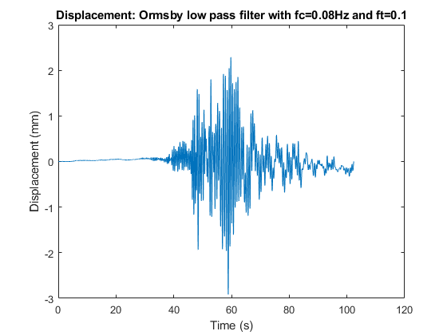
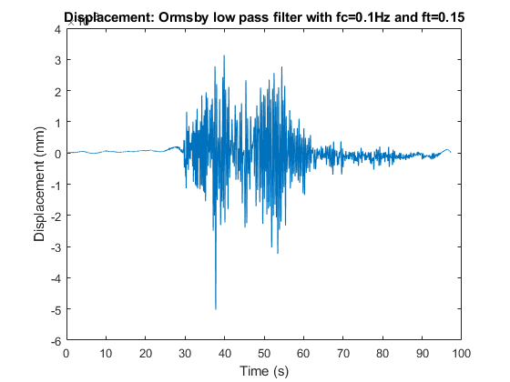

Contents
clc;clear;close all;
prob1
data3 = importdata("HW3- building seismic response data.txt");
t = data3(:,1);
ground = data3(:,2);
top = data3(:,3);
Sampling Rate
sr = round(1/(t(2)-t(1))); pt = length(t); fc=0.08; ft=0.1; delta = top - ground; delta = ormsby(delta,ft,fc,sr,pt); delta = delta - mean(delta); vel = cumtrapz(t,delta); vel2 = detrend(vel); trend = vel - vel2; disp_2 = cumtrapz(t,vel2); figure plot(t,disp_2) xlabel('Time (s)') ylabel('Displacement (mm)') title('Displacement: Ormsby low pass filter with fc=0.08Hz and ft=0.1')
prob2
Assign data
[data2,txt,raw] = xlsread('Homework-2 data set-RCF-Four Specimen Test Data.xlsx');
t = data2(:,1);
RCF6_x = data2(:,2);
RCF6_y = data2(:,3);
RCF2_x = data2(:,4);
RCF2_y = data2(:,5);
RCF4_x = data2(:,6);
RCF4_y = data2(:,7);
RCF3_x = data2(:,8);
RCF3_y = data2(:,9);
Sampling Rate
sr = round(1/(t(2)-t(1))); pt = length(t);
case a (relative acceleration)
(RCF2_100_A04 vs. RCF2_100_A10)
fc=0.1; ft=0.15; RCF2_R = RCF2_y - RCF2_x; % low-pass ormsby filter RCF2_FR = ormsby(RCF2_R,ft,fc,sr,pt); RCF2_FR = RCF2_FR - mean(RCF2_FR); vel = cumtrapz(t,RCF2_FR); vel2 = detrend(vel); trend = vel - vel2; disp_2 = cumtrapz(t,vel2); figure plot(t,disp_2) xlabel('Time (s)') ylabel('Displacement (mm)') title('Displacement: Ormsby low pass filter with fc=0.1Hz and ft=0.15')
case b (relative acceleration)
(RCF4_110_A04 vs. RCF4_110_A10)
fc=0.1; ft=0.15; RCF4_R = RCF4_y - RCF4_x; % low-pass ormsby filter RCF4_FR = ormsby(RCF4_R,ft,fc,sr,pt); RCF4_FR = RCF4_FR - mean(RCF4_FR); vel = cumtrapz(t,RCF4_FR); vel2 = detrend(vel); trend = vel - vel2; disp_2 = cumtrapz(t,vel2); figure plot(t,disp_2) xlabel('Time (s)') ylabel('Displacement (mm)') title('Displacement: Ormsby low pass filter with fc=0.1Hz and ft=0.15')
ormsby function
function y = ormsby(x,ft,fcut,sr,pt) dt = 1/sr; Nw = pt; mnw = fix(Nw/2); Nww = 1:1:Nw; w = kaiser(Nw,10); orm(mnw+1) = 2*(fcut+ft)/2; % at t=0 amplitude is 2fa = 2*(fc+ft)/2 t1=0; for nn=mnw+2:Nw t1=t1+dt; orm(nn)=(cos(2*pi*fcut*t1)-cos(2*pi*ft*t1))/(ft-fcut)/t1^2/2/(pi)^2; end for ii=1:mnw orm(ii)=orm(Nw+1-ii); end %window time interval tw=w.*orm'; Xaf=conv(x,tw,'same')*dt; y = x - Xaf; end